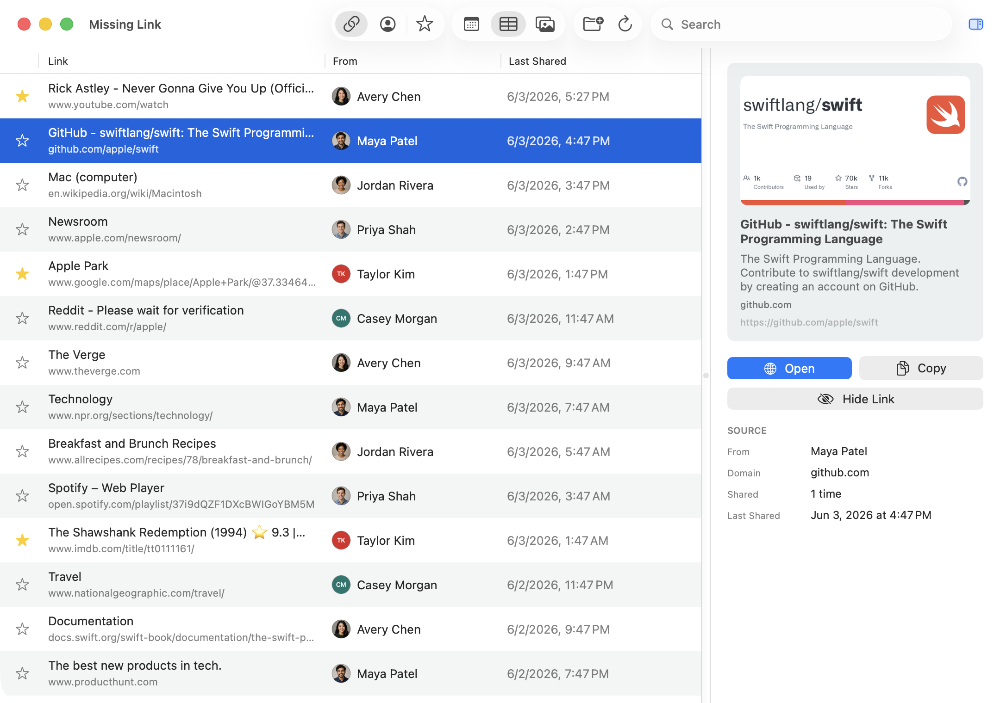

Frequently Asked Questions
What does Missing Link do?
Missing Link helps you find links from Messages.
Messages is great for conversations, but it is not always great for finding that article, map, video, post, reservation page, or shopping link someone sent weeks or months ago. Missing Link scans your local Messages history, extracts links, and lets you search, sort, star, hide, preview, open, and copy them.
How do I use Missing Link?
There are three basic steps:
- Grant read-only access to your Messages folder.
- Let Missing Link index the links it finds.
- Search or browse your links using Timeline, Table, or Images view.
You can search by title, domain, URL, sender, contact name, message excerpt, and available metadata. Select a link to see more details in the inspector, then open it or copy it.
What does “read-only Messages access” mean?
Missing Link reads the Messages database file stored locally on your Mac. It uses that access to find links.
It does not write to the Messages database. It does not edit messages. It does not delete messages. It does not mark messages as read. It does not send messages.
Does Missing Link upload my messages?
No. Missing Link does not upload your Messages database or message contents to an app server.
The main indexing work happens locally on your Mac. Missing Link stores its own local index so the app can search quickly without repeatedly parsing everything from scratch.
Does anything leave my Mac?
Some optional link preview features require network access.
When metadata fetching is enabled, Missing Link may contact linked websites, supported preview endpoints, or Apple’s metadata service to load titles, descriptions, icons, and images. That means a website may learn that a link was previewed.
Missing Link does not send your Messages database, full conversation history, or Contacts database to an app server.
Why does Missing Link need access to my Messages folder?
macOS protects your Messages data. Missing Link needs your permission before it can read the local Messages database.
When asked, select the Messages folder itself, usually:
~/Library/MessagesThis gives Missing Link access to read the local database file it needs to index links.
Why does Missing Link ask for Contacts access?
Contacts access is optional and is used to make results easier to read.
If enabled, Missing Link matches phone numbers and email addresses from Messages to names and thumbnail photos in your local Contacts database. For example, it can show “Alex Smith” instead of a phone number.
Contacts are read locally. Missing Link does not edit your contacts or upload your contacts.
What happens if I deny Contacts access?
Missing Link still works.
It will fall back to showing available Messages handles, such as phone numbers or email addresses, instead of contact names and photos.
What is metadata?
Metadata is preview information about a link, such as a page title, description, icon, or image.
For example, a bare URL might become a readable article title with a preview image. Metadata makes links easier to scan, especially in Images view.
Is metadata fetched automatically?
By default, Missing Link uses a privacy-conscious setting: metadata is automatically added for starred links and links from contacts.
You can change this in Settings:
- Starred and Contacts Only
- All Links
- Off
If metadata is Off, you can still add metadata manually.
Why not fetch metadata for every link by default?
Fetching metadata contacts websites. For links from unknown senders, that can be a privacy tradeoff.
The default is meant to be useful without being too eager: links you star and links from people in your contacts are treated as more likely to be worth previewing.
What kinds of links can get metadata?
Missing Link is intentionally cautious. Metadata fetching is limited to public HTTPS links and avoids private/local/internal network addresses.
HTTP links can still appear in Missing Link and can still be opened manually, but they are not used for metadata fetching.
What are Timeline, Table, and Images views?
Timeline view groups links by when they were shared. It is useful when you remember roughly when something was sent.
Table view shows links in a compact, sortable list. It is useful for scanning lots of results quickly.
Images view shows links with preview images when metadata is available. It is useful for visual browsing.
What does starring a link do?
Starring marks a link as important.
Starred links appear in the Starred collection and can be included in automatic metadata fetching. Stars are saved by Missing Link, separate from Messages.
What does hiding a link do?
Hiding removes a link from normal results without deleting it from Messages.
Hidden links stay hidden unless you turn on Show Hidden Links in Settings and unhide them. This is useful for links you do not want cluttering your library.
What happens if I delete a message in Messages?
Missing Link has a setting for links that are no longer present in Messages:
“Keep links deleted from Messages for”
Options include Don’t Keep, 30 Days, 90 Days, 1 Year, 2 Years, and Forever.
If set to Don’t Keep, links disappear from Missing Link when they are no longer found in Messages. If a retention period is selected, deleted-from-Messages links can remain in Missing Link for that amount of time based on when they were last shared.
Does Missing Link remove spam links?
Links from Messages content marked as spam or junk are removed automatically. There is no setting to keep spam links.
What data does Missing Link store locally?
Missing Link stores app-owned data such as:
- A local link index
- Starred and hidden link state
- Cached preview metadata
- Metadata attempt history
- Settings and layout preferences
- The saved Messages folder permission
This data belongs to Missing Link and can be deleted from Settings. It is separate from the Messages database.
What does “Delete All App Data” do?
Delete All App Data removes Missing Link’s local data, including its saved index, cached previews, preferences, stars, hidden links, metadata attempts, and saved Messages folder permission.
It does not delete or modify Messages.
After using it, Missing Link will behave like a fresh install and may need Messages access again.
Can I export links?
Yes. Missing Link can copy current results as JSON or Markdown.
Exports are user-initiated. They are meant for your own use. The app’s export format is sanitized and does not include raw Messages database identifiers.
Can Missing Link open links?
Yes. You can open selected links from the app.
In Settings, you can choose whether links open with Safari or your default browser.
Does Missing Link replace bookmarks?
Not exactly.
Bookmarks are links you intentionally saved. Missing Link is for links that appeared in Messages, including links you may not have remembered to bookmark. It is closer to a searchable shelf for messaged links.
Does Missing Link replace Messages search?
No. Missing Link is focused specifically on links.
Messages search is for conversations. Missing Link is for quickly finding URLs, previewing them, organizing them, and opening or copying them.
Does Missing Link back up my Messages?
No. Missing Link is not a Messages backup tool.
It creates a local app-owned index of links for search and browsing, but it does not preserve full conversations and should not be treated as a backup of Messages.
Why might a link be missing?
A link may be missing if Messages did not store it in a readable form, if the message was deleted, if it was marked as spam/junk, or if the link was filtered out as part of duplicate or preview-cleanup logic.
Missing Link tries to capture normal links from Messages, including links in group threads, but Messages stores different message types in different ways.
Why might metadata be missing?
Metadata depends on the linked website, the network, redirects, HTTPS support, content type, size limits, and privacy safety checks.
Some sites block preview requests, return incomplete metadata, or require browser features that Missing Link intentionally does not use.
What settings does Missing Link support?
Settings include:
- Messages folder access
- Show contact names instead of phone numbers
- Keep links deleted from Messages for
- Open links with Safari or the default browser
- Automatically add metadata for
- Automatically refresh Messages links
- Export current results as JSON or Markdown
- Show Hidden Links
- Delete All App Data
Where is the privacy policy?
The privacy policy is available at: